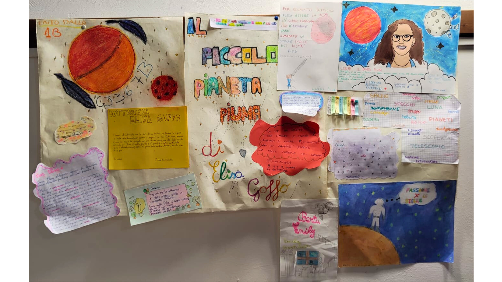

About Me
Welcome to my personal website! I am an Italian astrophysicist currently working in Germany and dedicated to discovering the mysteries of exoplanets. My research focuses on the discovery and characterization of these distant worlds using data from space and ground-based telescopes, employing methods such as transits and radial velocities.
In addition to research, I am also involved in science communication through social media and live events in schools. I love to share my passion for astronomy with others!
Besides engaging in science, I love to sing, listen to music, do yoga, and much more.
Education
PhD in Physics and Astrophysics
-
Department of Physics, University of Torino (Italy)
-
Thüringer Landessternwarte Tautenburg (Germany)
MSc in Astrophysics and Theoretical Physics
-
Department of Physics, University of Torino (Italy)
BSc in Physics
-
Department of Physics, University of Torino (Italy)
CV
Curriculum Vitae
Research
Research Interests
-
Extrasolar planets.
-
Exoplanets detection: transit and radial velocity methods.
-
Space-based time-series photometry: Kepler, K2, CHEOPS, TESS.
-
High-precision radial velocity measurements – high resolution spectroscopy.
-
Statistical methods.
Publications
You can find a list of my publications here.
Communication
In addition to scientific research, I am passionate about science communication. I actively engage with the public through social media and live events, including meetings in schools. My goal is to present science and astrophysics in an accessible, engaging and catchy way. I aim to show how the world of scientific research works, how one becomes an astrophysicist, and what this career entails.
Instagram
Follow me and discover my latest content.
Interviews
Guarda la mia intervista con Leonardo Durante.
Guarda la mia intervista con Ufficio Informazioni.
Ascolta la mia intervista con Wannabe. Il futuro che vorrei di Rai Radio 1.
School projects end events
I do school orientation meetings. Contact me to learn more!

Contact
Email:
elisa.goffo96@gmail.com
elisa@tls-tautenburg.de